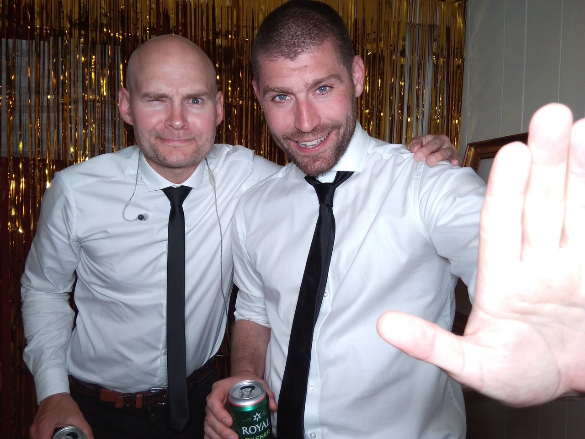
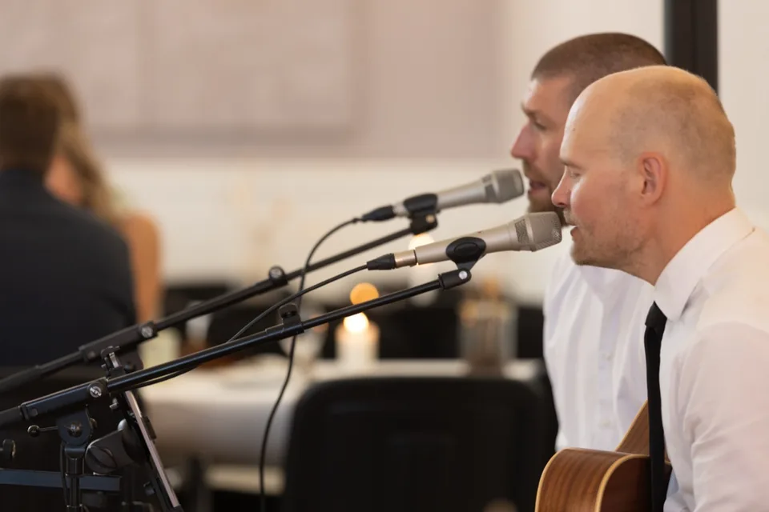

“Musikken lød mega godt”
Søren Rasmussen
Bryllupsreception · 2024-10-28
FLOW & GREEN · MUSIK TIL BRYLLUP
To stemmer, guitar og cajon. Vi spiller akustisk livemusik til vielse, reception, middag og fest. I vælger de dele af dagen, I vil have musik til.
Svar typisk inden for 24 timer · En forespørgsel er uforpligtende.

VIDEO OG LYD
Hør vores lyd og se, hvordan vi spiller sammen. Det er 100% live uden backtracks.

Når I vælger at afspille, indlæses videoen fra YouTube, som modtager oplysninger om besøget. Valget for eksterne videoer kan ændres nederst på siden. Åbn på YouTube ↗
Over 300 sange, fra moderne pop og soul til klassikere. Vi modtager gerne musikønsker.
Se hele repertoiret (PDF) ↗Lydoptagelsen afspilles direkte fra vores hjemmeside.
Send dato og by, hvis I kender dem. Så tager vi den derfra.
DET SIGER KUNDERNE
“Musikken lød mega godt”
Søren Rasmussen
Bryllupsreception · 2024-10-28
“Vi nød det max.”
Trine Schmidt Berggreen
3-i-1-fest · 2026-09-15
UFORPLIGTENDE FORESPØRGSEL
Fortæl os om dato, sted og ønsker. I behøver ikke kende alle detaljer endnu.
Vi svarer typisk inden for 24 timer med et uforpligtende tilbud.
flowandgreen@gmail.com ↗I kan også kontakte os her:
Fra Aarhus til jeres arrangement
Kørsel indgår i tilbuddet. Musik og lydniveau aftaler vi med jer.
En forespørgsel reserverer ikke datoen. Bookingen er på plads, når vi har lavet en aftale.
FORESPØRGSEL MODTAGET
Vi svarer typisk inden for 24 timer. Datoen er først reserveret, når vi har lavet en aftale.
DET PRAKTISKE
Vi har base i Aarhus. Vi spiller i Jylland, på Fyn og Sjælland samt Lolland og Falster efter aftale. Skriv dato og by, så afklarer vi mulighederne.
Prisen afhænger af dato, sted, spilletid og de dele af arrangementet, I ønsker musik til. I får et samlet tilbud med kørsel, så I kender prisen, før I beslutter jer.
Vi medbringer lydudstyr og aftaler tidsplan, lydniveau og musikønsker på forhånd. Særlige forhold som udendørs musik eller store lokaler afklarer vi sammen.
SPØRGSMÅL OG SVAR
Ja. I kan spørge på vielse, reception, middag eller dans, og vi kan også kombinere flere dele af dagen.
Vi tager gerne imod ønsker. En særlig sang til vielsen eller den første dans aftaler vi på forhånd, så vi har tid til at forberede den.
Vi medbringer det nødvendige lydudstyr til almindelige bryllupper og aftaler pauserne med jer. Ved store lokaler eller udendørs arrangementer afklarer vi behovet sammen.
Det afhænger af arrangementet. I får et uforpligtende tilbud ud fra spilletid, sted og ønsker, så rammerne er afklaret, inden I booker.
En forespørgsel reserverer ikke datoen. Vi svarer typisk inden for 24 timer og bekræfter booking og detaljer, når vi har lavet en aftale.
Vil I vide mere om os og musikken?
Mød Troels og Lasse ↗